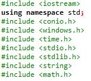
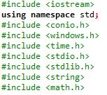

En la clase aprendimos nuevas cosas, pero principalmente hicimos
un repaso general de lo que llevamos hasta el momento en c++,
el repaso fue rapido, preciso y bien explicado, en el repaso aprendi, las partes
en la que se divide c++, que son librerias, funciones y main o principal.
Son archivos que nos permiten llevar a cabo diferentes tareas sin necesidad de
preocuparnos por como se hacen sino simplemente entender como usarlas.
 
En esta se pueden diseñar funciones que van a ser constante y utiles
a lo largo de toda la programcion, estos se usan cuando se sabe que
no va a cambiarse
Este es el principal, este es el hace que el algoritmo haga
su funcionamiento, controla la ejecución del programa dirigiendo
las llamadas a otras funciones del programa.